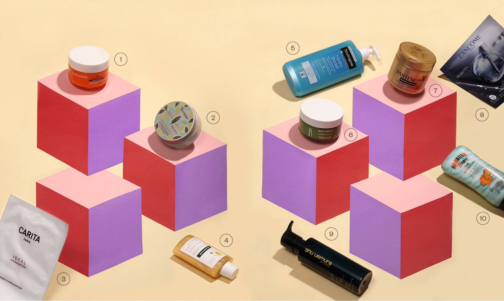

1. Tan Maximizer, de Lancaster. Este gel, que se aplica después de tomar sol en rostro y cuerpo, promete reparar la piel y mantener el moreno. $41.70 (250 ml). 2. Gelée Glacée Corps Verveine, de L’Occitane. Gel helado para el cuerpo con extracto de hierba verbena de cultivo biológico recolectado en la Provenza. $26 (250 ml). 3. Masque D’Imprégnation Idéal Hydratation, de Carita. Máscara compuesta por nanofibras de biocelulosa con propiedades hidratantes, calmantes y regenerantes. Se ciñe al rostro como una segunda piel (hay que dejar actuar 10 minutos). Pack de 5 unidades, $92. 4. Champú nutritivo Soin Soleil Ylang-Ylang, de Klorane. Específico para cabellos expuestos al sol, naturales o coloreados. Protege, combate la sequedad provocada por el agua salada y con cloro, y aporta flexibilidad y brillo. $9 (200 ml). 5. Hydro Boost, de Neutrogena. Loción corporal en gel con ácido hialurónico. Hidrata al instante y de forma continuada. Refrescante y ultraligera. $12 (400 ml). 6. Invigorating Blend Bath Therapy, de Biotherm. Crema corporal hidratante enriquecida con jengibre y menta. Ligera y refrescante, penetra de inmediato. $21.50 (200 ml). 7. Mascarilla intensiva Repara & Protege, de Pantene. Hidrata en profundidad y ayuda a combatir los signos de un pelo dañado en dos minutos. $49.10 (300 ml). 8. Hydrogel Melting Mask Génifique, de Lancôme. Máscara de juventud que proporciona buena cara al instante. Aporta luminosidad inmediata. $10.50 (4 unidades, 55 euros). 9. Acondicionador Ultimate Reset, de Shu Uemura. Para cabello muy dañado. Enriquecido con extracto de arroz japonés. Repara las fibras del cabello de la raíz a las puntas. $47.15 (300 ml). 10. After Sun Silk Hydration, de Hawaiian Tropic. Su fórmula fusiona la loción hidratante con el aloe vera. No es pegajosa ni grasienta. $10 (180 ml).
26 de Agosto del 2018
La sal, el cloro, el viento y la exposición al sol pasan factura. Pero el objetivo este verano es huir del efecto piel y pelo de lagarto. Esta batería de aftersun, mascarillas y champús de nueva generación ayudan a combatir la deshidratación de rostro, cuerpo y cabello.